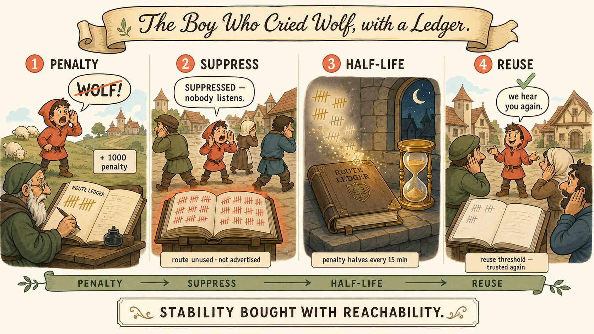

One Paragraph
Route flapping is a route (or the BGP session carrying it) repeatedly going up and down. Each flap is not one message — it's a withdrawal followed by a re-advertisement, and each of those propagates to every BGP router that ever heard the route. At internet scale, a single unstable prefix can force thousands of routers to reprocess updates over and over; an unstable session multiplies that by an entire table. Route flap damping is BGP's countermeasure: keep a per-prefix penalty score, punish every flap, and once the score crosses a threshold, suppress the route — refuse to use or propagate it — until the penalty decays below a reuse threshold. Stability is enforced by making instability expensive.
Why a Flap Is Expensive
- One route flap = withdrawal + re-advertisement, rippling to every router holding that prefix. Each router reprocesses, re-runs best-path selection, and may propagate onward.
- One session flap = the hold timer (or TCP) declares the peer dead → every route from that peer is flushed → seconds later the session re-establishes and the entire table re-advertises from scratch. On the internet core that can be 900,000+ prefixes, per flap.
- The multiplier: internet routers hold hundreds of peers. Twitchy timers everywhere = continuous global update churn — control-plane CPU burned on news that keeps un-happening. This is exactly why BGP's defaults (keepalive 60s, hold 180s) are deliberately glacial next to OSPF's 10/40.
How Damping Works
| Concept | What it does |
|---|---|
| Penalty | Every flap adds a fixed penalty to that prefix's score (e.g. 1000 per flap in the classic Cisco-style implementation). |
| Suppress threshold | Score crosses it → the route is suppressed: installed nowhere, advertised to no one, even if currently "up." |
| Half-life | The penalty decays exponentially — halves every N minutes (commonly 15) — so old sins are gradually forgiven. |
| Reuse threshold | Once decay brings the score below it, the route is un-suppressed and usable again. |
| Max suppress time | A ceiling on how long a route can stay suppressed regardless of score. |
Note what damping optimizes for: it deliberately accepts reachability loss (a suppressed route might be genuinely fine right now) in exchange for global stability. That's the same trade BGP's slow timers make, expressed as a per-prefix policy.
The Boy Who Cried Wolf, with a Ledger

Points & Distractors
- Flapping = repeated withdraw/re-advertise churn. Damping = penalty → suppress → decay → reuse.
- A session flap flushes and re-sends an entire table — this is the core reason BGP's hold timer is 180s, not 40s.
- Damping suppresses a route even while it is currently reachable — stability is being bought with reachability.
- Distractor: "damping speeds up convergence." Opposite — it deliberately slows reaction to unstable prefixes.
- Distractor: "flapping causes routing loops." No — it causes update churn and CPU load. Loops belong to distance-vector.
Four Questions
- Walk one prefix through penalty → suppress → half-life → reuse. What is the router doing with that route while suppressed?
- Why is a BGP session flap categorically worse than a single route flap?
- What does damping trade away to buy stability?
- Why did real-world operators come to distrust classic damping defaults?